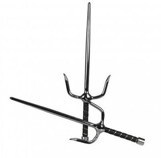

1st dan in Kobudo
Kobudo is a discipline that's not widely practised in the world, so few teachers are qualified to be grade judges. As I'm a black belt in karate, I'm considered a brown belt in kobudo, so this exam could give me a real idea of my level. I've already been given a date for this exam on June 28 in Paris, at a dojo in the 14th arrondissement.
The kobudo grading system works in much the same way as the karate system, except that the combat section has been removed as it would be too violent and dangerous with weapons, and replaced by more traditional two-person applications (with bo, tonfa and sai).

2nd dan in karate
In December 2025, it will have been 2 years since I obtained my 1st dan in karate, so I could be a candidate for the 2nd dan (for each dan passed, you have to have been practising for n years before applying for the next nth dan). Having started karate quite young, it's totally in my interest to pass my dan now, otherwise I could regret it later.
The grading system with units of value is the same as for the first dan, but the level increases exponentially as you move up the ranks.